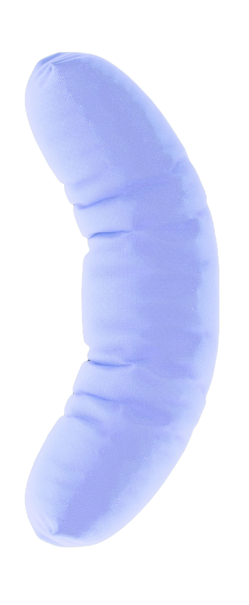

стайлгайд
Во сне происходит больше, чем ты
думаешь. Пока твоё тело отдыхает,
сновидения раскрывают тайны
твоего подсознания.
О SNOK(S)
Кто мы?
Медиа про сон и сновидения,
помогающее лучше узнать себя.
Миссия
Создать пространство
для комфортного сна
и ярких сновидений.
Суть
Соединение сонника, статей,
интерактивных элементов
в виде тестов и викторин.
Характер
Заботливый, искренний,
спокойный, понимающий,
образованный.
Ценности
Осознанность, вдохновение,
гармония, саморазвитие,
восстановление.
Tone of voice
Дружелюбный и доступный.
Мы говорим как с другом,
упрощая сложные вещи.
Цвета
В нашу цветовую палитру
входят три цвета: угольный,
дымчато-белый и небесный.
Для добавления лёгкости,
небесный цвет зачастую
осветляется в графике.
угольный
#232323
Небесный
#7DA6FF
Дымчато-белый
#F2F1F1
Осветлённый небесный
#B7CEFF
Сочетания
Основные сочетания цветов
представлены ниже. Вариантов
может быть больше, но для нас
главное, чтобы цвета были
констрастными.
При этом, мы не стремимся
к излишнему контрасту.
Мы придерживаемся
принципа сдержанности
в цветовых сочетаниях,
чтобы не перегружать
читателей.
Можно:
1
Нельзя:
Логотип
Наш логотип представляет
собой букву S из названия
в скобках, где скобки служат
метафорой подушек —
символа сна и отдыха.
Существует два варианта
логотипа: векторный в трёх
основных цветах и 3д
в одном цвете.


Векторный логотип
используется во всех случаях,
кроме веба. Он подходит для
печатных материалов,
рекламы и другой оффлайн-
продукции.